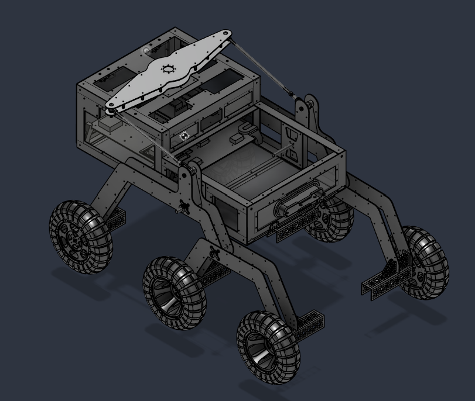

Mechanical design · Robotics integration
Rover Central Housing Unit
Redesigned the rover’s central housing unit in aluminum, doubling chassis load capacity from 35 to 70 lb while accommodating interchangeable robotic payloads.
Explore project →